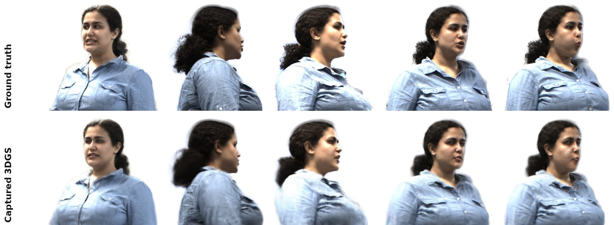

Photorealistic Avatar Synthesis with 3D Gaussian Splatting
A human avatar pipeline built on 3D Gaussian Splatting and diffusion-based generative models, targeting real-time rendering at photorealistic fidelity. The pipeline exposes controllable fidelity levels, so one identity can be rendered along a photorealism gradient and evaluated for perceptual accessibility under sensory deficits.